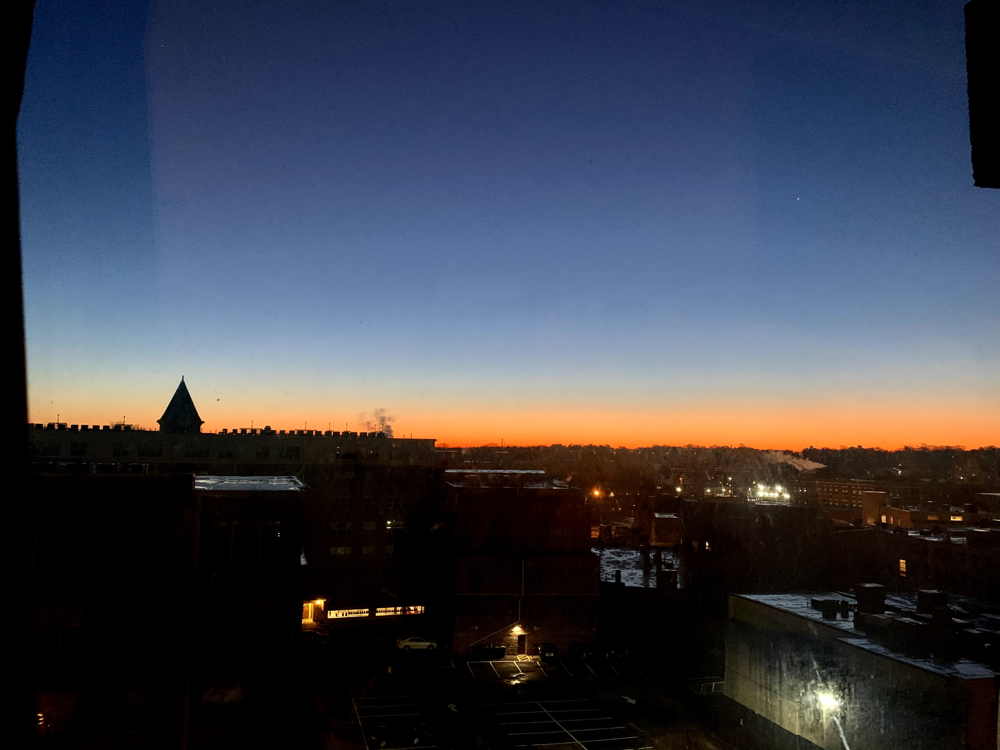

2020年对于大家都是“非凡”的一年，对于我这个“非凡”可能稍微多了一层，就是再也不受身体问题的困扰了。去年12月做完手术后恢复还是很快的，在今年年初就已经完全恢复，终于可以像正常人一样生活了！👻👻👻
爸妈去年年底来陪我做的手术，老爸先回的家，是在年底。老妈又在这里多陪了我一段时间。跨年的时候还和老妈去了Boston Common，看了冰雕，烟花还有灯光秀，那时候Copley Square人头攒动，现在想来真是恍如隔世。
而后就听到武汉疫情的消息，一开始还只是一些“传闻”，然后就越来越大越来越严重。在老妈临回家之前，我们买了一堆口罩，洗手液等等，因为当时家里好像已经不太好买了，箱子里最后塞满了防护用品。送老妈上飞机那天，除了中国的航空公司的员工带了口罩以外都和平常一样。老妈顺利回家后，国内疫情愈演愈烈，唉这里就不做赘述了，反正每天看社交网络都蛮难受的😞。彼时美国这边还好，除了听到零星的案例以外一切照旧，和身边的外国朋友聊起国内的疫情他们基本上都是不以为然的样子。期间还和室友去了一趟Cape Cod玩耍，没想到这就是2020年最后的出游了。
其实我也不记得是什么时候，美国好像突然就严重了起来。楼下的实验室专业就是做传染病预测的，所以实验室做了几次这样的“讲座”之类。特朗普的政策……唉就不说了。印象最深的是那时候CDC还矢口否认口罩有用，我到现在都想不通为什么，以及怎么突然就又说有用了，而且一句解释没有🤦♀️。我在的州算好的了，医疗水平很高，但就这样我都觉得他们有时候还跟玩似的🤯……然后就是开始work from home了，钢琴课也变成了远程。其实我适应的还好，因为平常我就不太去实验室，很习惯在家工作。虽然社交活动是少了，但我好像就是特自嗨那种人，每天都特别忙，也没觉得无聊。当然这也要感谢互联网，感觉我大多数“社交”的人都是网友lol～另外大面积lockdown之后网上的各种live活动多了好多，每天基本上都可以找到可以看的东西，不论是歌剧啊，音乐会啊等等，觉得文化生活也没有太多缺失。而且幸运的是我室友人都很好，真的无法想象如果我是一个人住会是什么情景，感觉大概率是会疯掉。
在家工作后感觉一天的structure也清晰了很多，有更多的大块的时间可以心无旁骛地工作了，有时间可以锻炼了，十月的时候我还设了一个“早起挑战”，一共持续了60多天，把我的作息成功调到了老太太作息，基本上九点多就上床呆着，十点之前就躺下了，早上五六点起床。早上可以看日出的感觉真的非常好。虽然有人调侃自从lockdown以后每天都是复制粘贴，我也有这样的感觉，但我觉得我粘的还蛮开心的哈哈哈哈。科研方面虽然成果几乎没有，除了又被拒好几回以外，但感觉还是在向目标前进的吧～ 
日出时分
九月又去实习了，这回全程virtual体验还是蛮奇特的……但是遇到的mentor和组里同事人都好好，真是感慨自己何德何能啊。虽然只见到了2D版的大家，但大家都特别热心，特别是我mentor，我感觉真是从头到尾都非常耐心认真的帮助我，感激涕零。做的project也蛮有意思的，虽然实习后期的确拼命了一点，身体上有点累但心情还是很好的，整个实习结束也蛮有成就感的，也学到了不少新东西～
实习期间还“薅羊毛”上了一个mindfulness的课，可能是今年的高光时刻之一。我之前就有接触一些mindfulness的东西，也偶尔会冥想什么的，所以上课的内容其实没有觉得特别mind-blowing，但是，想到散布在全世界，同时有这么多人和你在一起冥想，感觉真的很感动很温暖～另外老师特别温柔，听到她说话就觉得被治愈了哈哈哈。由于上课的契机，坚持冥想了蛮长时间，感觉的确变得非常calm和stable，也不老苛责自己效率不高什么的了。在这种心情特别稳当的情况下，对工作的resistance也变少了，进而提高了效率，而且提高了自己的成就感。这真是太值了，每天可能也就花十分钟左右的时间～
读书方面今年还是做的不错的。感觉差不多得读了20来本？还读了长久以来心心念念的《堂吉诃德》，《卡拉马佐夫兄弟》，《美丽新世界》，《自私的基因》，啊都好好看。对我影响最深的可能是《被讨厌的勇气》，还一改了我对畅销书的偏见，另外还买给了我妈看，和老妈一起讨论书什么的真是特别开心～读得最开心的可能是《趣味生活简史》，读得最难受但也体会很深的是《失明症漫记》，读得一直在惊叹的可能是《浪漫主义根源》。今年还在Notion上建了图书馆页面，更系统的搜集记录我的读书笔记，虽然整理笔记和写书评花的时间很多，但年纪大了真的很容易忘掉书的内容，现在就可以翻翻之前的书评和摘抄来唤醒记忆了～对我读的书感兴趣的朋友可以移步：邓布利多的图书馆

今年读的书
弹琴方面，今年钢琴课主要是以远程为主，还挑战了不少曲目的，其中最难的是一个Rachmaninoff的prelude，真的弹哭了要哈哈哈哈～今年开始实习后暂停了钢琴课，不过还是蛮经常练琴的，练了几首巴赫，然后还有勃拉姆斯的一首Intermezzo，前段时间还参加了练琴地方的学生recital，虽然很短但蛮好玩的哈哈哈～
画画方面，今年是第一年尝试bullet journal，体验真的是非常好啊！兼顾了我练习画画和日程规划的两大需求，而且互相促进：自己画的layout如果不好好利用就太可惜了～虽然每个月月末的时候都要小小”焦虑“一番下个月的主题是什么，但是每次画完就觉得自己怎么画的这么好（哈哈哈哈，可能这也是今年的一大进步，就是自我满意度越来越高了哈哈哈哈）。除了bullet journal以外的画画不算特别多，画了一个猫和老鼠系列，还画了一个邓布利多表情包哈哈哈～

我的Bujo cover pages！

Tom and Jerry复刻

邓布利多表情包
学习方面，上了好几个Coursera的课，主要都是深度学习，自然语言处理啥的（我也是有点落伍了哈），当时主要是想为实习做点准备，但最后发现都没用上哈哈哈，但是学习新知识真的太让人开心了～另外还学了蛮多日语的，虽然离能考试还有很大差距，但肉眼可见有一些小小的进步～
另外就是今年有幸加入/创造了一些community。今年秋天加入了women overseas这个论坛，在这个平台上真是久违的感受到了互联网的友好～还参加了几次线上活动，大家都特别supportive，很喜欢这个community的感觉～另外我也和一个朋友攒了一个古典音乐相关的community，其实我私心是想趁此机会学习的，但是居然因此结识了这么多很厉害的新朋友，特别开心～经营这个community也的确督促了我多学习这方面的知识，比如做了一个Satie的mini-series，还有这个月还正在进行的Beethember（Beethoven+December，因为今年是贝多芬250周年，12月是他的生日月），每天分享一首贝多芬的作品，虽然每天感觉都有点压力山大，但因此听了好多贝多芬的音乐，搜了很多他的资料。

和women overseas的小伙伴一起陪伴工作
人生感悟方面，大致的变化不多，主要就是受mindfulness和《被讨厌的勇气》影响，更注重当下了，这也和我前几年的体会，time doesn’t exist联系了起来。“活在当下”这种说法可能现在都太cliche了，但我感觉今年才真正地，稍微地尝到了这是一种什么感觉，感受到了它的力量，所以可能算是今年才稍稍对这句话有了一些真正的理解，感觉对未来的焦虑少了很多。《被讨厌的勇气》里说的一句话说得好：正是因为我们看不到未来，我们才成为命运的主人。
基于我time doesn’t exist的人生观，写new year resolution我是很不赞同的了哈哈哈。不过2021年的一大目标是毕业，如果能谈个恋爱就更好了但是这个没法强求，除此之外大概就是好好活着，每天都好好活着，就很好了。